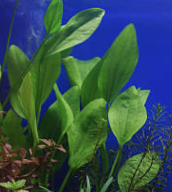
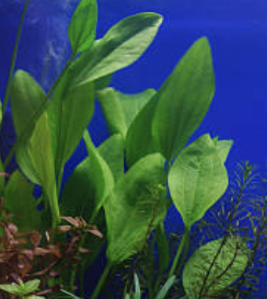

home
fishes
plants
tanks
shop
plants
Using an axe, the player can chop a fully grown tree to produce wood. With the exception of bamboo trees,
any tree may be chopped to produce wood. If using a flimsy or stone axe, the tree will be able to produce three pieces a day. If using a sturdy axe, the tree will produce two pieces,
but on the third hit the tree will produce another piece of wood and then fall over.

Furniture in Pocket Camp can be both placed in campsites, and in campers. Unlike previous installments of the Animal Crossing series, the majority of the furniture is gained through crafting with Cyrus
using materials received from villagers or by accomplishing goals.
You may also purchase un-craftable items by visiting Timmy and Tommy at the Nookling Global stand in the Market Place, where there will be a rotating selection of three pieces at a time up for sale.
Special events provide the opportunity to earn Limited Edition items that can be crafted using special materials introduced temporarily for the event.
check out our selection
also check out:

 

fish care. com
find us at:
//image here
fish care. com
find us at: